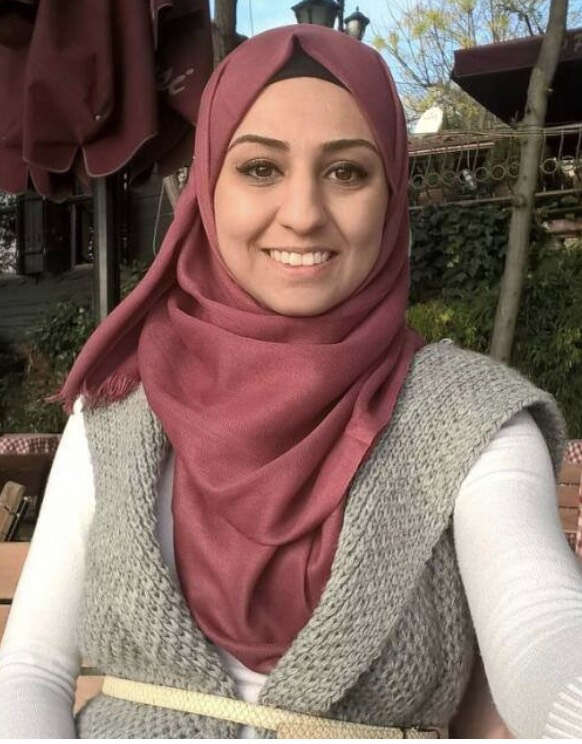
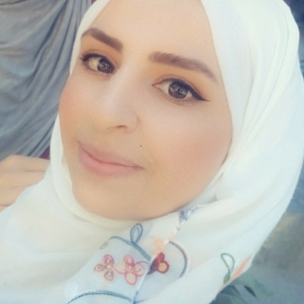
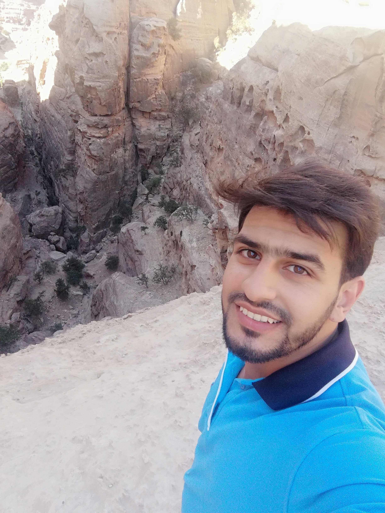

Muna Al Shorman
about Muna :
She's studied Computer Engineering in Faculity of Engineering, now a student at code fellows, studying HTML, Javascript and CSS.she's Looking for get a job after this course. like watching series .muna love spending time with her family.
Naseem Izzat Al-Qatameen
about Naseem Izzat Al-Qatameen :
she's studied electrical power engineer at TTU, then She worked as a lab supervisor in TTU . After that worked in solar power company as a marketing and design engineer. Today naseem's studying HTML, CSS and JavaScript with code follows.
Tasnim Ali AL-zaqaypeh

about tasnim:
Tasnim studied at Al-Hussein Bin Talal University and graduated this year at a high rate as a radiologist. Tasnim loves cats and pandas and plays guitar, she loves rain and autumn and her favorite yellow color, she loves helping people and making them happy. She is very funny indeed.
Ibrahim Ajarmeh
about Ibrahim:
Ibrahim Ajarmeh, I studied Mechanical engineering specialized in HVAC systems in Tafila Technical University,I was top on my class. Now I’m studying software programming as a code fellows student, I love to learn new stuff, and learning programming in a way that may serve my specialty will be wonderful, wish me luck Big Dream Long Story.